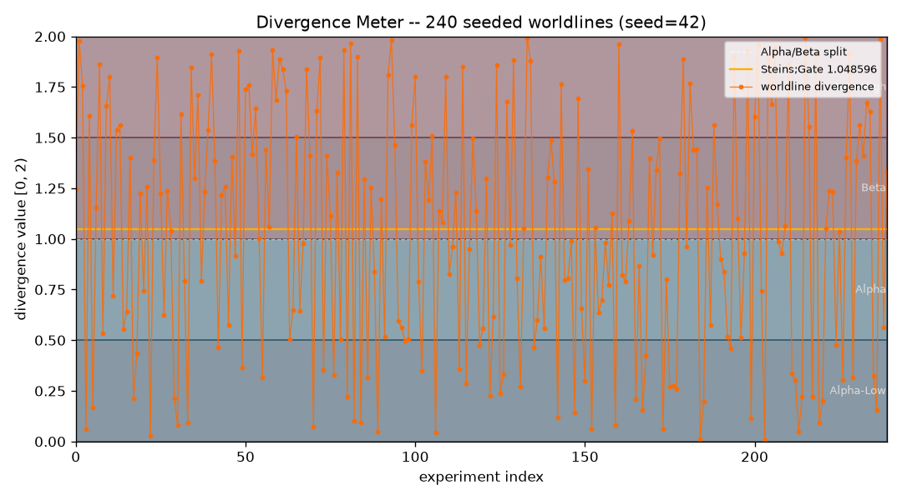

divergence-meter
A Steins;Gate worldline-divergence number, classified into an attractor field and rendered on a nixie-tube ASCII display — the hash is exact, never floating-point.

The idea
In Steins;Gate, the Divergence Meter reads a worldline number — a value in [0, 2) — that indicates which attractor field (timeline cluster) the current worldline belongs to. The show's canonical Steins;Gate worldline is exactly 1.048596.
This package computes a divergence number deterministically from any payload string using
SHA-256 hashing, with all arithmetic done as exact fractions.Fraction.
The result is classified into an attractor field and rendered on a 3×5 seven-segment
nixie-tube ASCII display.
The mathematics
word = SHA-256(payload)[:8] → 64-bit integer divergence = Fraction(word, 2^63) ∈ [0, 2) (exact, no floating point) Attractor fields: Alpha-Low [0, 0.5) — low-divergence alpha Alpha [0.5, 1.0) — alpha attractor Beta [1.0, 1.5) — beta attractor Beta-High [1.5, 2.0) — high-divergence beta Steins;Gate worldline: 1.048596 (within tolerance 5e-7 of 1.048596) Golden pair: "El Psy Congroo" → 1.062031 word = 9795511409617762124 Reading Steiner: atomic-write JSON store, frozen dataclasses
The ASCII nixie display renders each digit as a 3×5 seven-segment character with a physical nixie-tube feel. The display is purely text — no images, no dependencies.
_ _ _ _ _ _ |_| | ||_ |_||_ _| | | | _| |_||_ _| Worldline: 1.048596 [Steins;Gate attractor — MATCH]
Figures & animations
Worldlines — attractor field map
Sample payload strings mapped to their divergence numbers, coloured by attractor field. The Steins;Gate 1.048596 target is marked.
Run it
git clone https://github.com/caelum0x/awesome-mad-projects.git cd divergence-meter pip install -e . python -m divergence_meter "El Psy Congroo" # → Worldline: 1.062031 [Beta attractor] # Check the canonical Steins;Gate worldline python -m divergence_meter --check-steins-gate # Run tests python -m pytest tests/ -v